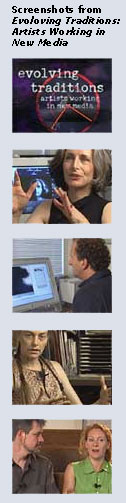

|
Review of "Evolving Traditions", page 2 In the first profile of the documentary, Toni Dove demonstrates how far new media has come in the creation of interactive narrative. In “Artificial Changelings”—an interactive film she describes as “a story about a kleptomaniac, in nineteenth-century Paris during the rise of the department store, who’s dreaming about an encryption hacker in the future”—Dove brings together VR and video game technology with art sensibility to explore the ways in which they allow the user to reshape the temporality of narrative. Frankly admitting her initial resistance to interactive technologies, Dove claims that early hypertext works that came out when the field was still in its infancy helped to create “misconceptions” about possibilities of interactivity. It is, therefore, a rather provocative editorial decision on the part of director Seth Thompson to profile hypertext pioneer Mark Amerika immediately after Dove, for Amerika’s descriptions of his early hypertexts encapsulate precisely the rigidity that initially turned Dove off of new media. In fact, the juxtaposition between Dove’s physically interactive narratives and Amerika’s oversimplified “liberate the reader” rhetoric suggests that hypertext simply has not aged well. Amerika’s descriptions come off as dated and his inclusion in the video seems more of an attempt to suggest the history of the field than its current status. Nevertheless, Amerika’s discussion of his highly touted alt-x network indicates a possible afterlife for hypertext in the field of publishing, suggesting that even early applications can be adapted for newer forms. Despite the outdatedness of Amerika’s contributions to “Evolving Traditions,” it is actually Tennessee Rice Dixon’s interview that is the greatest disappointment of the video, although it is a disappointment lessened by the artistry of Dixon’s work itself. Like Dove and Amerika, Dixon is interested in storytelling, and her experience as a book artist leads her to an innovative and promising emphasis not on narrative but rather on digital technology’s potential for assemblage and collage. Although Dixon’s images are quite compelling, her own commentary in the video does very little to illuminate either the ideas communicated by her work or the particular allure of using new media in creating it. Even the additional critical commentary by Kathy Brew, an independent producer/curator/educator, fails to open up Dixon’s work for the viewer. The video profile of Dixon does, however, show just enough of her assemblage to indicate that she is an artist worth checking out, so those interested in finding out more should head straight to the video website at <http://www. wigged. net/evolvingtraditions/> and follow the links to Dixon’s online work. The highlight of Thompson’s documentary, and its most appropriate use of video as a way of demonstrating the allure of new media productions, comes near the end in its profile of the dance theater company Troika Ranch. Unlike the previous three artists whose work seems rather ill-suited to video presentation, especially in the cases where free and direct access to the work is available online, Troika Ranch benefits from the interview format and video presentation that allows them to explain the role of sensory technology in their musical compositions and then to demonstrate precisely what kind of sounds and images the technologized body might produce in a dance production. Combining dance, musical composition, live performance, digital visual projections, sensory technology, and interactivity, Troika Ranch’s artistic productions are perhaps the most suggestive of the potential new media has for evolving in new artistic directions. As the documentary’s final composite of interviews suggests, disciplinary divisions among artists working in new media have begun to break down, and several critics argue that soon even the term “new media” will become obsolete as the designation for a specific artistic field. Thompson’s decision to end his documentary with a profile of the cross-genre performances of Troika Ranch seems to argue by demonstration that these erosions are already well underway. The difference between Troika
Ranch’s digitally mediated dance productions and the other three artists’ interactive
works is that the latter three all rely on interaction between the
audience and the digital work whereas Troika Ranch’s performance relies on
interaction between the performer and the technology with the audience as
uninvolved spectator. Thus, while the
purpose of the video is to explore some of the different forms artistic
applications of interactive media can take, the format may seem puzzling. Many of the works would be more
appropriately presented on CD-ROM, which would allow the audience to utilize
some of the interactive capabilities that the documentary touts. The purpose of the video, however, is not to
give audience members hands-on experience with the works but rather to offer
them a basic introduction to a world they may never have seen, particularly if
digital media, internet art, or avant-garde venues such as The Kitchen Gallery
are not already on their maps. In other
words, Thompson’s video, however ill-suited a medium it may seem for most of
the works it presents, is about getting people interested enough to actually
get them in the door (or portal) to explore new media art for themselves. As a result, Thompson’s documentary is best
aimed at an audience of the uninitiated, especially for use in a high school or
college classroom. Although the video
presentation runs the risk of frustrating new media art-lovers who would much
rather interact with the works than watch others do so, and despite the limits
of the commentary in illuminating the theoretical aspects of new media art
production, “Evolving Traditions” succeeds in creating enthusiasm for the
possibilities of new media’s transformation of artistic traditions. I suspect that many viewers who watch the
documentary will be inspired to check out new media works for themselves, not
only online but perhaps even in galleries where interactive exhibits can be
appreciated most fully. And given my
recent lonely experience at The Kitchen, I welcome the crowds. 1 | 2 |